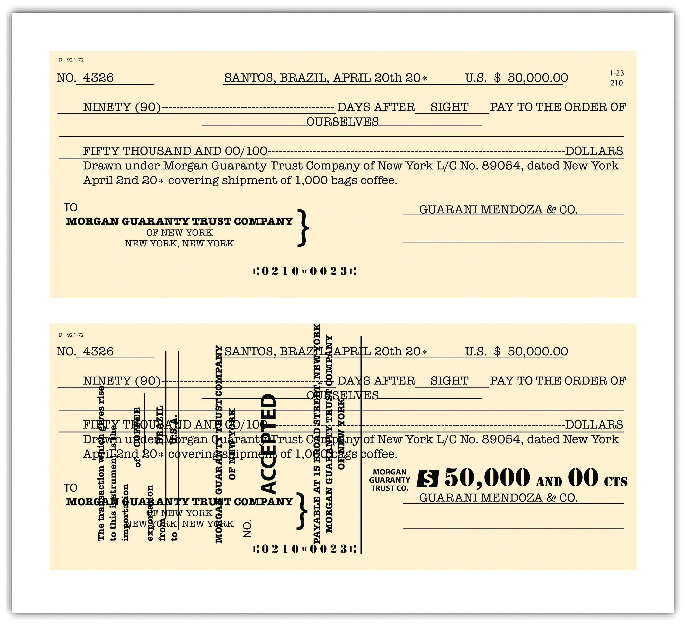
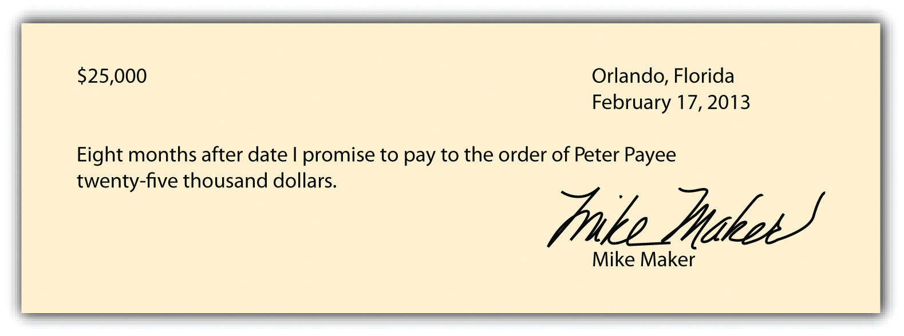
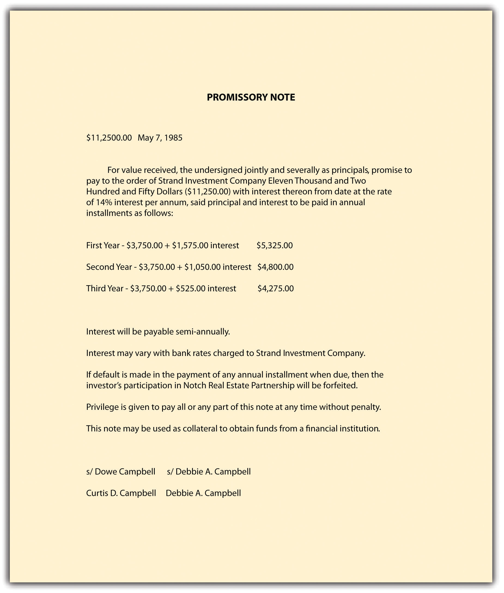
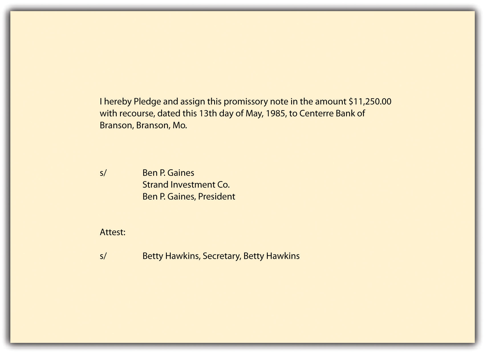
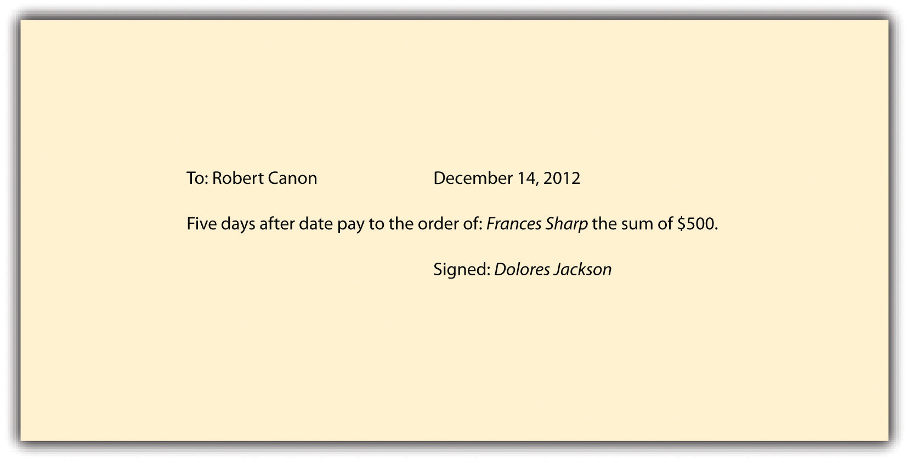

After reading this chapter, you should understand the following:
Here we begin our examination of commercial paper, documents representing an obligation by one party to pay another money. You are familiar with one kind of commercial paper: a check.
Because commercial paper is a vital invention for the working of our economic system, brief attention to its history and its function as a medium of exchange in economics and finance is appropriate.
Commercial paper is the collective term for various financial instruments, or tools, that include checks drawn on commercial banks, drafts (drawn on something other than a bank), certificates of deposit, and notes evidencing a promise to pay. Like money, commercial paper is a medium of exchange, but because it is one step removed from money, difficulties arise that require a series of interlocking rules to protect both sellers and buyers.
To understand the importance of commercial paper, consider the following example. It illustrates a distinction that is critical to the discussion in our four chapters on commercial paper.
Lorna Love runs a tennis club. She orders a truckload of new tennis rackets from Rackets, Inc., a manufacturer. The contract price of the rackets is $100,000. Rackets ships the rackets to Love. Rackets then sells for $90,000 its contract rights (rights to receive the payment from Love of $100,000) to First Bank (see Figure 22.1 "Assignment of Contract Rights"). Unfortunately, the rackets that arrive at Love’s are warped and thus commercially worthless. Rackets files for bankruptcy.
Figure 22.1 Assignment of Contract Rights

May the bank collect from Love $100,000, the value of the contract rights it purchased? No. Under the contract rule discussed in Chapter 14 "Third-Party Rights", an assignee—here, the bank—steps into the shoes of the assignor and takes the assigned rights subject to any defense of the obligor, Love. (Here, of course, Love’s defense against paying is that the rackets are worthless.) The result would be the same if Love had given Rackets a nonnegotiable note, which Rackets proceeded to sell to the bank. (By nonnegotiable we do not mean that the note cannot be sold but only that certain legal requirements, discussed in Section 22.3 "Requirements for Negotiability" of this chapter, have not been met.)
Now let us add one fact: In addition to signing a contract, Love gives Rackets a negotiable note in exchange for the rackets, and Rackets sells the note to the bank. By adding that the note is negotiable, the result changes significantly. Because the note is negotiable and because the bank, we assume, bought the note in good faith (i.e., unaware that the rackets were warped), the bank will recover the $100,000 (see Figure 22.2 "Sale of Negotiable Note").
Figure 22.2 Sale of Negotiable Note

The key to the central role that commercial paper plays in modern finance is negotiabilityTransferable from one person to another by delivery or by delivery and indorsement.. Negotiability means that the paper is freely and unconditionally transferable from one person to another by delivery or by delivery and indorsement. (“Indorsement,” not “endorsement,” is the spelling used in the UCC, though the latter is more common in nonlegal usage.) Without the ability to pay and finance through commercial paper, the business world would be paralyzed. At bottom, negotiability is the means by which a person is empowered to transfer to another more than what the transferor himself possesses. In essence, this is the power to convey to a transferee the right in turn to convey clear title, when the original transferor does not have clear title.
In this chapter, we examine the history and nature of commercial paper and define the types of parties (persons who have an interest in the paper) and the types of instruments. We then proceed to four fundamental issues that must be addressed to determine whether parties such as First Bank, in the preceding example, can collect:
In most transactions, especially when the first three questions are answered affirmatively, the purchaser will have little trouble collecting. But when the purchaser is unable to collect, questions of liability arise. These questions, along with termination of liability, are discussed in Chapter 25 "Liability and Discharge".
Finally, in Chapter 26 "Legal Aspects of Banking" we examine other legal aspects of banking, including letters of credit and electronic funds transfer.
Negotiable instruments are no modern invention; we know that merchants used them as long ago as the age of Hammurabi, around 1700 BC. They fell into disuse after the collapse of the Roman Empire and then reappeared in Italy around the fourteenth century. They became more common as long-distance commerce spread. In an era before paper currency, payment in coins or bullion was awkward, especially for merchants who traveled great distances across national boundaries to attend the fairs at which most economic exchanges took place. Merchants and traders found it far more efficient to pay with paper.
Bills of exchange, today commonly known as drafts, were recognized instruments in the law merchant. (The “law merchant” was the system of rules and customs recognized and adopted by early-modern traders and is the basis of the UCC Article 3.) A draft is an unconditional order by one person (the drawer) directing another person (drawee or payor) to pay money to a named third person or to bearer; a check is the most familiar type of draft. The international merchant courts regularly enforced drafts and permitted them to be transferred to others by indorsement (the legal spelling of endorsement). By the beginning of the sixteenth century, the British common-law courts began to hear cases involving bills of exchange, but it took a half century before the courts became comfortable with them and accepted them as crucial to the growing economy.
Courts were also hesitant until the end of the seventeenth century about sanctioning a transferor’s assignment of a promissory note if it meant that the transferee would have better title than the transferor. One reason for the courts’ reluctance to sanction assignments stemmed from the law that permitted debtors to be jailed, a law that was not repealed until 1870. The buyer of goods might have been willing originally to give a promissory note because he knew that a particular seller would not attempt to jail him for default, but who could be sure that a transferee, probably a complete stranger, would be so charitable?
The inability to negotiate promissory notes prevented a banking system from fully developing. During the English Civil War in the seventeenth century, merchants began to deposit cash with the goldsmiths, who lent it out at interest and issued the depositors promissory notes, the forerunner of bank notes. But a judicial decision in 1703 declared that promissory notes were not negotiable, whether they were made payable to the order of a specific person or to the bearer. Parliament responded the following year with the Promissory Notes Act, which for the first time permitted an assignee to sue the note’s maker.
Thereafter the courts in both England and the United States began to shape the modern law of negotiable instruments. By the late nineteenth century, Parliament had codified the law of negotiable instruments in England. Codification came later in the United States. In 1896, the National Conference of Commissioners on Uniform State Laws proposed the Negotiable Instruments Act, which was adopted in all states by 1924. That law eventually was superseded by the adoption of Articles 3 and 4 of the Uniform Commercial Code (UCC), which we study in these chapters.
In 1990, the American Law Institute and the National Conference of Commissioners on Uniform State Laws approved revised Article 3, entitled “Negotiable Instruments,” and related amendments in Article 4. The revisions clarified and updated the law. All states except New York and North Carolina have adopted Articles 3 and 4.
State law governing commercial paper is vulnerable to federal preemption. This preemption could take two major forms. First, the Federal Reserve Board governs the activities of Federal Reserve Banks. As a result, Federal Reserve regulations provide important guidelines for the check collection process. Second, Article 3 of the UCC can be preempted by federal statutes. An important example is the Expedited Funds Availability Act, which became effective in 1988 (discussed in Chapter 26 "Legal Aspects of Banking").
Federal preemption may also become intertwined with international law. In 1988, the United Nations General Assembly adopted the Convention on International Bills of Exchange and International Promissory Notes. Progress on the treaty emanating from the convention has been slow, however: the United States, Canada, and Russia have approved the convention (in 1989 and 1990) but have not ratified the treaty; Gabon, Guinea, Honduras, Liberia, and Mexico are the only countries to have ratified it.
To the economist, one type of commercial paper—the bank check—is the primary component of M1, the basic money supply. It is easy to see why. When you deposit cash in a checking account, you may either withdraw the currency—coins and bills—or draw on the account by writing out a check. If you write a check to “cash,” withdraw currency, and pay a creditor, there has been no change in the money supply. But if you pay your creditor by check, the quantity of money has increased: the cash you deposited remains available, and your creditor deposits the check to his own account as though it were cash. (A more broadly defined money supply, M2, includes savings deposits at commercial banks.)
Commercial paper is defined more narrowly in finance than in law. To the corporate treasurer and other financiers, commercial paper ordinarily means short-term promissory notes sold by finance companies and large corporations for a fixed rate of interest. Maturity dates range from a low of three days to a high of nine months. It is an easy way for issuers to raise short-term money quickly. And although short-term notes are unsecured, historically they have been almost as safe as obligations of the US government. By contrast, for legal purposes, commercial paper includes long-term notes (which are often secured), drafts, checks, and certificates of deposit.
Commercial paper is a medium of exchange used like cash but safer than cash; cash is rarely used today except for small transactions. The key to the success of this invention is the concept of negotiability: through this process, a person can pass on—in most cases—better title to receive payment than he had; thus the transferee of such paper will most likely get paid by the obligor and will not be subject to most defenses of any prior holders. The law of commercial paper has developed over the past four hundred years. It is now the Uniform Commercial Code that governs most commercial paper transactions in the United States, but federal or international preemption is possible in the future. Commercial paper is important in both economics and finance.
Article 3 of the Uniform Commercial Code (UCC) covers commercial paper but explicitly excludes money, documents of title, and investment securities. Documents of title include bills of lading and warehouse receipts and are governed by Article 7 of the UCC. Investment securities are covered by Article 8. Instruments that fall within the scope of Article 3 may also be subject to Article 4 (bank deposits and collections), Article 8 (securities), and Article 9 (secured transactions). If so, the rules of these other articles supersede the provisions of Article 3 to the extent of conflict. Article 3 is a set of general provisions on negotiability; the other articles deal more narrowly with specific transactions or instruments.
There are four types of commercial paper: drafts, checks, notes, and certificates of deposit.
A draftA document ordering the payment of money; drawn by one person or bank on another. is an unconditional written order by one person (the drawer) directing another person (the drawee) to pay a certain sum of money on demand or at a definite time to a named third person (the payee) or to bearer. The draft is one of the two basic types of commercial paper; the other is the note. As indicated by its definition, the draft is a three-party transaction.
The drawerThe person who makes out (draws) a check or draft. is one who directs a person or an entity, usually a bank, to pay a sum of money stated in an instrument—for example, a person who makes a draft or writes a check. The drawer prepares a document (a form, usually)—the draft—ordering the drawee to remit a stated sum of money to the payee. The draweeThe person (or bank) expected to pay a check or draft when it is presented for payment. is the person or entity that a draft is directed to and that is ordered to pay the amount stated on it. The most common drawee is a bank. The drawer, drawee, and payee need not be different people; the same person may have different capacities in a single transaction. For example, a drawer (the person asking that payment be made) may also be the payee (the person to whom the payment is to be made). A drawee who signs the draft becomes an acceptorA drawee who accepts a draft, agreeing to be primarily responsible for paying it.: the drawee pledges to honor the draft as written. To accept, the drawee need only sign her name on the draft, usually vertically on the face, but anywhere will do. Words such as “accepted” or “good” are unnecessary. However, a drawee who indicates that she might refuse to pay will not be held to have accepted. Thus in the archetypal case, the court held that a drawee who signed his name and appended the words “Kiss my foot” did not accept the draft.Norton v. Knapp, 19 N.W. 867 (IA 1884).
The drawer directs the funds to be drawn from—pulled from—the drawee, and the drawee pays the person entitled to payment as directed.
Drafts can be divided into two broad subcategories: sight drafts and time drafts.
A sight draftA draft or bill that is payable on demand or upon presentation. Also called demand draft. calls for payment “on sight,” that is, when presented. Recall from Section 22.1 "Introduction to Commercial Paper" that Lorna Love wished to buy tennis rackets from Rackets, Inc. Suppose Love had the money to pay but did not want to do so before delivery. Rackets, on the other hand, did not want to ship before Love paid. The solution: a sight draft, drawn on Love, to which would be attached an order bill of lading that Rackets received from the trucker when it shipped the rackets. The sight draft and bill of lading go to a bank in Love’s city. When the tennis rackets arrive, the carrier notifies the bank, which presents the draft to Love for payment. When she has done so, the bank gives Love the bill of lading, entitling her to receive the shipment. The bank forwards the payment to Rackets’ bank, which credits Rackets’ account with the purchase amount.
A time draftDraft (bill of exchange) payable to a third party on a specified or determinable future date., not surprisingly, calls for payment on a date specified in the draft. Suppose that Love will not have sufficient cash to pay until she has sold the rackets but that Rackets needs to be paid immediately. The solution: a common form of time draft known as a trade acceptance. Rackets, the seller, draws a draft on Love, who thus becomes a drawee. The draft orders Love to pay the purchase price to the order of Rackets, as payee, on a fixed date. Rackets presents the draft to Love, who accepts it by signing her name. Rackets then can indorse the draft (by signing it) and sell it, at a discount, to its bank or some other financial institution. Rackets thus gets its money right away; the bank may collect from Love on the date specified. See the example of a time draft in Figure 22.3 "A Time Draft".
Figure 22.3 A Time Draft
Drafts are an international convention. In England and the British Commonwealth, drafts are called bills of exchange. Like a draft, a bill of exchangeA written order by one person to pay a sum of money to a third person. is a kind of check or promissory note without interest. Used primarily in international trade, it is a written order by one person to pay another a specific sum on a specific date sometime in the future. If the bill of exchange is drawn on a bank, it is called a bank draft. If it is drawn on another party, it is called a trade draft. Sometimes a bill of exchange will simply be called a draft, but whereas a draft is always negotiable (transferable by endorsement), this is not necessarily true of a bill of exchange.
A widely used draft in international trade is the banker’s acceptanceA draft or bill of exchange accepted by a bank where the accepting institution guarantees payment. Used extensively in foreign trade transactions.. It is a short-term credit investment created by a nonfinancial firm and guaranteed by a bank. This instrument is used when an exporter agrees to extend credit to an importer.
Assume Love, the importer, is in New York; Rackets, the exporter, is in Taiwan. Rackets is willing to permit Love to pay ninety days after shipment. Love makes a deal with her New York bank to issue Rackets’ bank in Taiwan a letter of credit. This tells the seller’s bank that the buyer’s bank is willing to accept a draft drawn on the buyer in accordance with terms spelled out in the letter of credit. Love’s bank may insist on a security interest in the tennis rackets, or it may conclude that Love is creditworthy. On receipt of the letter of credit, Rackets presents its bank in Taiwan with a draft drawn on Love’s bank. That bank antes up the purchase amount (less its fees and interest), paying Rackets directly. It then forwards the draft, bill of lading, and other papers to a correspondent bank in New York, which in turn presents it to Love’s bank. If the papers are in order, Love’s bank will “accept” the draft (sign it). The signed draft is the banker’s acceptance (see Figure 22.3 "A Time Draft"). It is returned to the bank in Taiwan, which can then discount the banker’s acceptance if it wishes payment immediately or else wait the ninety days to present it to the New York bank for payment. After remitting to the Taiwanese bank, the New York bank then demands payment from Love.
A second type of commercial paper is the common bank check, a special form of draft. Section 3-104(2)(b) of the UCC defines a checkA negotiable instrument drawn against deposited funds to pay a specified amount of money to a specific person upon demand. as “a draft drawn on a bank and payable on demand.” PostdatingPutting a date on an instrument (e.g., a check) that is later than the actual date. a check (putting in a future date) does not invalidate it or change its character as payable on demand. Postdating simply changes the first time at which the payee may demand payment. Checks are, of course, usually written on paper forms, but a check can be written on anything—a door, a shirt, a rock—though certainly the would-be holder is not obligated to accept it.
Like drafts, checks may be accepted by the drawee bank. Bank acceptance of a check is called certificationThe acceptance by a drawee of a check or draft.; the check is said to be certified by stamping the word “certified” on the face of the check. When the check is certified, the bank guarantees that it will honor the check when presented. It can offer this guarantee because it removes from the drawer’s account the face amount of the check and holds it for payment. The payee may demand payment from the bank but not from the drawer or any prior indorser of the check.
A certified check is distinct from a cashier’s check. A cashier’s checkA check guaranteed by a bank and so as good as cash. is drawn on the account of the bank itself and signed by an authorized bank representative in return for a cash payment to it from the customer. The bank guarantees payment of the cashier’s check also.
A note—often called a promissory noteA written promise to pay or repay a specified sum of money at a stated time or on demand.—is a written promise to pay a specified sum of money on demand or at a definite time. There are two parties to a note: the makerA party that signs a promissory note. (promisor), and the payeeThe person who is to receive payment on a draft or note. (promisee). For an example of a promissory note, see Figure 22.4 "A Promissory Note". The maker might execute a promissory note in return for a money loan from a bank or other financial institution or in return for the opportunity to make a purchase on credit.
Figure 22.4 A Promissory Note
A fourth type of commercial paper is the certificate of depositA debt instrument issued by a bank; usually pays interest., commonly called a CD. The CD is a written acknowledgment by a bank that it has received money and agrees to repay it at a time specified in the certificate. The first negotiable CD was issued in 1961 by First National City Bank of New York (now Citibank); it was designed to compete for corporate cash that companies were investing in Treasury notes and other funds. Because CDs are negotiable, they can be traded easily if the holder wants cash, though their price fluctuates with the market.
In addition to makers, drawees, and payees, there are five other capacities in which one can deal with commercial paper.
The indorserThe person who indorses. (also spelled endorser) is one who transfers ownership of a negotiable instrument by signing it. A depositor indorses a check when presenting it for deposit by signing it on the back. The bank deposits its own funds, in the amount of the check, to the depositor’s account. By indorsing it, the depositor transfers ownership of the check to the bank. The depositor’s bank then can present it to the drawer’s bank for repayment from the drawer’s funds. The indorseeThe person to whom a note or bill is indorsed, or assigned by indorsement. is the one to whom a draft or note is indorsed. When a check is deposited in a bank, the bank is the indorsee.
A holderOne who has legal possession of a draft, note, or other negotiable instrument and who is entitled to payment. is “a person in possession of a negotiable that is payable either to bearer, or to an identified person that is the person in possession.”Uniform Commercial Code, Section 1-201(21). Holder is thus a generic term that embraces several of the specific types of parties already mentioned. An indorsee and a drawee can be holders. But a holder can also be someone unnamed whom the original parties did not contemplate by name—for example, the holder of a bearer note.
A holder in due courseGood-faith holder who has taken a negotiable instrument for value, without notice that it was overdue or had been dishonored or that there was any defense against or claim to it. is a special type of holder who, if certain requirements are met, acquires rights beyond those possessed by the transferor (we alluded to this in describing the significance of Lorna Love’s making of a negotiable—as opposed to a nonnegotiable—instrument). We discuss the requirements for a holder in due course in Chapter 24 "Holder in Due Course and Defenses".
An accommodation partyOne who signs an instrument as drawer, indorser, or acceptor to help another raise money. is one who signs a negotiable instrument in order to lend her name to another party to the instrument. It does not matter in what capacity she signs, whether as maker or comaker, drawer or codrawer, or indorser. As a signatory, an accommodation party is always a surety (Chapter 26 "Legal Aspects of Banking"; a surety is one who guarantees payment if the primarily obligated party fails to pay). The extent of the accommodation party’s liability to pay depends on whether she has added language specifying her purposes in signing. Section 3-416 of the UCC distinguishes between a guaranty of payment and a guaranty of collection. An accommodation party who adds words such as “payment guaranteed” subjects herself to primary liability: she is guaranteeing that she will pay if the principal signatory fails to pay when the instrument is due. But if the accommodation party signs “collection guaranteed,” the holder must first sue the maker and win a court judgment. Only if the judgment is unsatisfied can the holder seek to collect from the accommodation party. When words of guaranty do not specify the type, the law presumes a payment guaranty.
The modern law of commercial paper is, in general, covered by UCC Article 3. The two basic types of commercial paper are drafts and notes. The note is a two-party instrument whereby one person (maker) promises to pay money to a second person (payee). The draft is a three-party instrument whereby one person (drawer) directs a second (drawee) to pay money to the third (payee). Drafts may be sight drafts, payable on sight, or they may be time drafts, payable at a date specified on the draft. Checks are drafts drawn on banks. Other parties include indorser and indorsee, holder, holder in due course, and accommodation party.
Whether or not a paper is negotiable is the first of our four major questions, and it is one that nonlawyers must confront. Auditors, retailers, and financial institutions often handle notes and checks and usually must make snap judgments about negotiability. Unless the required elements of Sections 3-103 and 3-104 of the Uniform Commercial Code (UCC) are met, the paper is not negotiable. Thus the paper meets the following criteria:
This definition states the basic premise of a negotiable instrument: the holder must be able to ascertain all essential terms from the face of the instrument.
Under UCC Section 1-201, “written” or “writing” includes “printing, typewriting or any other intentional reduction to tangible form.” That definition is broad—so broad, in fact, that from time to time the newspapers report checks written on material ranging from a girdle (an Ohio resident wanted to make his tax payment stretch) to granite. Since these are tangible materials, the checks meet the writing requirement. The writing can be made in any medium: ink, pencil, or even spray paint, as was the case with the granite check. Of course, there is a danger in using pencil or an ink that can be erased, since the drawer might be liable for alterations. For example, if you write out in pencil a check for $10 and someone erases your figures and writes in $250, you may lose your right to protest when the bank cashes it.
Signature is not limited to the personal handwriting of one’s name. “Any symbol executed or adopted by a party with present intention to authenticate a writing” will serve.Uniform Commercial Code, Section 1-201(39). That means that a maker or drawer may make an impression of his signature with a rubber stamp or even an X if he intends that by so doing he has signed. It can be typed or by thumbprint. In some cases, an appropriate letterhead may serve to make the note or draft negotiable without any other signature. Nor does the position of the signature matter. Blackstone Kent’s handwritten note, “Ten days from this note, I, Blackstone Kent, promise to pay $5,000 to the order of Webster Mews,” is sufficient to make the note negotiable, even though there is no subsequent signature. Moreover, the signature may be in a trade name or an assumed name. (Note: special problems arise when an agent signs on behalf of a principal. We consider these problems in Chapter 25 "Liability and Discharge".)
Section 3-106(a) of the UCC provides that an instrument is not negotiable if it “states (i) an express condition to payment, (ii) that the promise or order is subject to or governed by another writing, or (iii) that rights or obligations with respect to the promise or order are stated in another writing. A reference to another writing does not of itself make the promise or order conditional.” Under 3-106(b), a promise is not made conditional by “(i) reference to another writing for a statement of rights with respect to collateral, pre-payment, or acceleration, or (ii) because payment is limited to resort to a particular fund or source.” As to “reference to another writing,” see Holly Hill Acres, Ltd. v. Charter Bank of Gainesville, in Section 22.4 "Cases".
The only permissible promise or order in a negotiable instrument is to pay a sum certain in money. Any other promise or order negates negotiability. The reason for this rule is to prevent an instrument from having an indeterminate value. The usefulness of a negotiable instrument as a substitute for money would be seriously eroded if the instrument’s holder had to investigate whether a stipulation or condition had been met before the thing had any value (i.e., before the obligor’s obligation to pay ripened).
The value of the paper must be fixed (specific) so it can be ascertained, and it must be payable in money.
The instrument must recite an exact amount of money that is to be paid, although the exact amount need not be expressed in a single figure. For example, the note can state that the principal is $1,000 and the interest is 11.5 percent, without specifying the total amount. Or the note could state the amount in installments: twelve equal installments of $88.25. Or it could state different interest rates before and after a certain date or depending on whether or not the maker has defaulted; it could be determinable by a formula or by reference to a source described in the instrument.Uniform Commercial Code, Section 3-112(b). It could permit the maker to take a discount if he pays before a certain date or could assess a penalty if he pays after the date. It could also provide for an attorney’s fees and the costs of collection on default. If it is clear that interest is to be included but no interest amount is set, UCC Section 3-112 provides that it is “payable at the judgment rate in effect at the place of payment of the instrument and at the time interest first accrues.” The fundamental rule is that for any time of payment, the holder must be able to determine, after the appropriate calculations, the amount then payable. See Section 22.4 "Cases", Centerre Bank of Branson v. Campbell, for a case involving the “fixed amount” rule.
Section 1-201(24) of the UCC defines money as “a medium of exchange authorized or adopted by a domestic or foreign government as a part of its currency.” As long as the medium of exchange was such at the time the instrument was made, it is payable in money, even if the medium of exchange has been abolished at the time the instrument is due. Section 3-107 provides the following as to payment in foreign currency: “Unless the instrument otherwise provides, an instrument that states the amount payable in foreign money may be paid in the foreign money or in an equivalent amount in dollars calculated by using the current bank-offered spot rate at the place of payment for the purchase of dollars on the day on which the instrument is paid.”
An instrument that says it is payable on sight is payable on demand, as is one that states no time for payment. “Definite time” may be stated in several ways; it is not necessary to set out a specific date. For example, a note might say that it is payable on or before a stated date, at a fixed period after the date, at a fixed period after sight, at a definite time subject to acceleration, or at a definite time subject to extension at the option of the holder or automatically on or after the occurrence of a particular event. However, if the only time fixed is on the occurrence of a contingent event, the time is not definite, even though the event in fact has already occurred. An example of a valid acceleration clause is the following: “At the option of the holder, this note shall become immediately due and payable in the event that the maker fails to comply with any of the promises contained in this note or to perform any other obligation of the maker to the holder.”
Is the note “Payable ten days after I give birth” negotiable? No, because the date the baby is due is uncertain. Is the note “Payable on January 1, but if the Yankees win the World Series, payable four days earlier” negotiable? Yes: this is a valid acceleration clause attached to a definite date.
One practical difference between a demand instrument and a time instrument is the date on which the statute of limitations begins to run. (A statute of limitations is a limit on the time a creditor has to file a lawsuit to collect the debt.) Section 3-118(1) of the UCC says that a lawsuit to enforce payment at a definite time “must be commenced within six years after the due date” (or the accelerated due date). For demand paper, an action must be brought “within six years after the demand.”
An instrument payable to order is one that will be paid to a particular person or organization identifiable in advance. To be payable to order, the instrument must so state, as most ordinarily do, by placing the words “payable to order of” before the name of the payee. An instrument may be payable to the order of the maker, drawer, drawee, or someone else. It also may be payable to the order of two or more payees (together or in the alternative), to an estate, a trust, or a fund (in which case it is payable to the representative, to an office or officer, or to a partnership or unincorporated association). Suppose a printed form says that the instrument is payable both to order and to bearer. In that event, the instrument is payable only to order. However, if the words “to bearer” are handwritten or typewritten, then the instrument can be payable either to order or to bearer.
A negotiable instrument not payable to a particular person must be payable to bearer, meaning to any person who presents it. To be payable to bearer, the instrument may say “payable to bearer” or “to the order of bearer.” It may also say “payable to John Doe or bearer.” Or it may be made payable to cash or the order of cash.
Section 3-104(c) of the UCC excepts checks from the requirement that the instrument be “payable to bearer or order.” Official Comment 2 to that section explains why checks are not required to have the “payable” wording: “Subsection (c) is based on the belief that it is good policy to treat checks, which are payment instruments, as negotiable instruments whether or not they contain the words ‘to the order of.’ These words are almost always pre-printed on the check form.…Absence of the quoted words can easily be overlooked and should not affect the rights of holders who may pay money or give credit for a check without being aware that it is not in the conventional form.”
Also affecting this policy is the fact that almost all checks are now read by machines, not human beings. There is no one to see that the printed form does not contain the special words, and the significance of the words is recognized by very few people. In short, it doesn’t matter for checks.
The rules just stated make up the conditions for negotiability. Dealing with two additional details—missing terms or ambiguous terms—completes the picture. Notwithstanding the presence of readily available form instruments, sometimes people leave words out or draw up confusing documents.
An incomplete instrument—one that is missing an essential element, like the due date or amount—can be signed before being completed if the contents at the time of signing show that the maker or drawer intends it to become a negotiable instrument. Unless the date of an instrument is required to determine when it is payable, an undated instrument can still be negotiable.Uniform Commercial Code, Section 3-113(b). Otherwise, to be enforceable, the instrument must first be completed—if not by the maker or drawer, then by the holder in accordance with whatever authority he has to do so.Uniform Commercial Code, Section 3-115. See the case presented in Section 22.4 "Cases", Newman v. Manufacturers Nat. Bank of Detroit.
When it is unclear whether the instrument is a note or draft, the holder may treat it as either. Handwritten terms control typewritten and printed terms, and typewritten terms control printed terms. Words control figures, unless the words themselves are ambiguous, in which case the figures control. If the instrument contains a “conspicuous statement, however expressed, to the effect that the promise or order is not negotiable,” its negotiability is destroyed, except for checks, and “an instrument may be a check even though it is described on its face by another term, such as ‘money order.’”Uniform Commercial Code, Section 3-104(d); Uniform Commercial Code, Section 3-104(f).
If an instrument is not negotiable, it generally will not be acceptable as payment in commercial transactions. The UCC requires that the value of a negotiable instrument be ascertainable on its face, without reference to other documents. Thus the negotiable instrument must be in writing, signed by the maker or drawer, an unconditional promise or order to pay, for a fixed amount in money, payable on demand or at a definite time, and payable to order or bearer, unless it is a check. If the instrument is incomplete or ambiguous, the UCC provides rules to determine what the instrument means.
Holly Hill Acres, Ltd. v. Charter Bank of Gainesville
314 So.2d 209 (Fla. App. 1975)
Scheb, J.
Appellant/defendant [Holly Hill] appeals from a summary judgment in favor of appellee/plaintiff Bank in a suit wherein the plaintiff Bank sought to foreclose a note and mortgage given by defendant.
The plaintiff Bank was the assignee from Rogers and Blythe of a promissory note and purchase money mortgage executed and delivered by the defendant. The note, executed April 28, 1972, contains the following stipulation:
This note with interest is secured by a mortgage on real estate, of even date herewith, made by the maker hereof in favor of the said payee, and shall be construed and enforced according to the laws of the State of Florida. The terms of said mortgage are by this reference made a part hereof. (emphasis added)
Rogers and Blythe assigned the promissory note and mortgage in question to the plaintiff Bank to secure their own note. Plaintiff Bank sued defendant [Holly Hill] and joined Rogers and Blythe as defendants alleging a default on their note as well as a default on defendant’s [Holly Hill’s] note.
Defendant answered incorporating an affirmative defense that fraud on the part of Rogers and Blythe induced the sale which gave rise to the purchase money mortgage. Rogers and Blythe denied the fraud. In opposition to plaintiff Bank’s motion for summary judgment, the defendant submitted an affidavit in support of its allegation of fraud on the part of agents of Rogers and Blythe. The trial court held the plaintiff Bank was a holder in due course of the note executed by defendant and entered a summary final judgment against the defendant.
The note having incorporated the terms of the purchase money mortgage was not negotiable. The plaintiff Bank was not a holder in due course, therefore, the defendant was entitled to raise against the plaintiff any defenses which could be raised between the appellant and Rogers and Blythe. Since defendant asserted an affirmative defense of fraud, it was incumbent on the plaintiff to establish the non-existence of any genuine issue of any material fact or the legal insufficiency of defendant’s affirmative defense. Having failed to do so, plaintiff was not entitled to a judgment as a matter of law; hence, we reverse.
The note, incorporating by reference the terms of the mortgage, did not contain the unconditional promise to pay required by [the UCC]. Rather, the note falls within the scope of [UCC 3-106(a)(ii)]: “A promise or order is unconditional unless it states that…it is subject to or governed by any other writing.”
Plaintiff Bank relies upon Scott v. Taylor [Florida] 1912 [Citation], as authority for the proposition that its note is negotiable. Scott, however, involved a note which stated: “this note secured by mortgage.” Mere reference to a note being secured by mortgage is a common commercial practice and such reference in itself does not impede the negotiability of the note. There is, however, a significant difference in a note stating that it is “secured by a mortgage” from one which provides, “the terms of said mortgage are by this reference made a part hereof.” In the former instance the note merely refers to a separate agreement which does not impede its negotiability, while in the latter instance the note is rendered non-negotiable.
As a general rule the assignee of a mortgage securing a non-negotiable note, even though a bona fide purchaser for value, takes subject to all defenses available as against the mortgagee. [Citation] Defendant raised the issue of fraud as between himself and other parties to the note, therefore, it was incumbent on the plaintiff Bank, as movant for a summary judgment, to prove the non-existence of any genuinely triable issue. [Citation]
Accordingly, the entry of a summary final judgment is reversed and the cause remanded for further proceedings.
Centerre Bank of Branson v. Campbell
744 S.W.2d 490 (Mo. App. 1988)
Crow, J.
On or about May 7, 1985, appellants (“the Campbells”) signed the following document:
Figure 22.5
On May 13, 1985, the president and secretary of Strand Investment Company (“Strand”) signed the following provision [see Figure 22.6] on the reverse side of the above [Figure 22.5] document:
Figure 22.6
On June 30, 1986, Centerre Bank of Branson (“Centerre”) sued the Campbells. Pertinent to the issues on this appeal, Centerre’s petition averred:
“1. …on [May 7,] 1985, the [Campbells] made and delivered to Strand…their promissory note…and thereby promised to pay to Strand…or its order…($11,250.00) with interest thereon from date at the rate of fourteen percent (14%) per annum; that a copy of said promissory note is attached hereto…and incorporated herein by reference.
2. That thereafter and before maturity, said note was assigned and delivered by Strand…to [Centerre] for valuable consideration and [Centerre] is the owner and holder of said promissory note.”
Centerre’s petition went on to allege that default had been made in payment of the note and that there was an unpaid principal balance of $9,000, plus accrued interest, due thereon. Centerre’s petition prayed for judgment against the Campbells for the unpaid principal and interest.
[The Campbells] aver that the note was given for the purchase of an interest in a limited partnership to be created by Strand, that no limited partnership was thereafter created by Strand, and that by reason thereof there was “a complete and total failure of consideration for the said promissory note.” Consequently, pled the answers, Centerre “should be estopped from asserting a claim against [the Campbells] on said promissory note because of such total failure of consideration for same.”
The cause was tried to the court, all parties having waived trial by jury. At trial, the attorney for the Campbells asked Curtis D. Campbell what the consideration was for the note. Centerre’s attorney interrupted: “We object to any testimony as to the consideration for the note because it’s our position that is not a defense in this lawsuit since the bank is the holder in due course.”…
The trial court entered judgment in favor of Centerre and against the Campbells for $9,000, plus accrued interest and costs. The trial court filed no findings of fact or conclusions of law, none having been requested. The trial court did, however, include in its judgment a finding that Centerre “is a holder in due course of the promissory note sued upon.”
The Campbells appeal, briefing four points. Their first three, taken together, present a single hypothesis of error consisting of these components: (a) the Campbells showed “by clear and convincing evidence a valid and meritorious defense in that there existed a total lack and failure of consideration for the promissory note in question,” (b) Centerre acquired the note subject to such defense in that Centerre was not a holder in due course, as one can be a holder in due course of a note only if the note is a negotiable instrument, and (c) the note was not a negotiable instrument inasmuch as “it failed to state a sum certain due the payee.”…
We have already noted that if Centerre is not a holder in due course, the Campbells can assert the defense of failure of consideration against Centerre to the same degree they could have asserted it against Strand. We have also spelled out that Centerre cannot be a holder in due course if the note is not a negotiable instrument. The pivotal issue, therefore, is whether the provision that interest may vary with bank rates charged to Strand prevents the note from being a negotiable instrument.…
Neither side has cited a Missouri case applying [UCC 3-104(a)] to a note containing a provision similar to: “Interest may vary with bank rates charged to Strand.” Our independent research has likewise proven fruitless. There are, however, instructive decisions from other jurisdictions.
In Taylor v. Roeder, [Citation, Virginia] (1987), a note provided for interest at “[t]hree percent (3.00%) over Chase Manhattan prime to be adjusted monthly.” A second note provided for interest at “3% over Chase Manhattan prime adjusted monthly.” Applying sections of the Uniform Commercial Code adopted by Virginia identical to [the Missouri UCC], the court held the notes were not negotiable instruments in that the amounts required to satisfy them could not be ascertained without reference to an extrinsic source, the varying prime rate of interest charged by Chase Manhattan Bank.
In Branch Banking and Trust Co. v. Creasy, [Citation, North Carolina] (1980), a guaranty agreement provided that the aggregate amount of principal of all indebtedness and liabilities at any one time for which the guarantor would be liable shall not exceed $35,000. The court, emphasizing that to be a negotiable instrument a writing must contain, among other things, an unconditional promise to pay a sum certain in money, held the agreement was not a negotiable instrument. The opinion recited that for the requirement of a sum certain to be met, it is necessary that at the time of payment the holder be able to determine the amount which is then payable from the instrument itself, with any necessary computation, without reference to any outside source. It is essential, said the court, for a negotiable instrument “to bear a definite sum so that subsequent holders may take and transfer the instrument without having to plumb the intricacies of the instrument’s background.…
In A. Alport & Son, Inc. v. Hotel Evans, Inc., [Citation] (1970), a note contained the notation “with interest at bank rates.” Applying a section of the Uniform Commercial Code adopted by New York identical to [3-104(a)] the court held the note was not a negotiable instrument in that the amount of interest had to be established by facts outside the instrument.
In the instant case, the Campbells insist that it is impossible to determine from the face of the note the amount due and payable on any payment date, as the note provides that interest may vary with bank rates charged to Strand. Consequently, say the Campbells, the note is not a negotiable instrument, as it does not contain a promise to pay a “sum certain” [UCC 3-104(a)].
Centerre responds that the provision that interest may vary with bank rates charged to Strand is not “directory,” but instead is merely “discretionary.” The argument begs the question. Even if one assumes that Strand would elect not to vary the interest charged the Campbells if interest rates charged Strand by banks changed, a holder of the note would have to investigate such facts before determining the amount due on the note at any time of payment. We hold that under 3-104 and 3-106, supra, and the authorities discussed earlier, the provision that interest may vary with bank rates charged to Strand bars the note from being a negotiable instrument, thus no assignee thereof can be a holder in due course. The trial court therefore erred as a matter of law in ruling that Centerre was a holder in due course.…
An alert reader will have noticed two other extraordinary features about the note, not mentioned in this opinion. First, the note provides in one place that principal and interest are to be paid in annual installments; in another place it provides that interest will be payable semiannually. Second, there is no acceleration clause providing that if default be made in the payment of any installment when due, then all remaining installments shall become due and payable immediately. It would have thus been arguable that, at time of trial, only the first year’s installment of principal and interest was due. No issue is raised, however, regarding any of these matters, and we decline to consider them sua sponte [on our own].
The judgment is reversed and the cause is remanded for a new trial.
Newman v. Manufacturers Nat. Bank of Detroit
152 N.W.2d 564 (Mich. App. 1967)
Holbrook, J.
As evidence of [a debt owed to a business associate, Belle Epstein], plaintiff [Marvin Newman in 1955] drew two checks on the National Bank of Detroit, one for $1,000 [about $8,000 in 2010 dollars] and the other for $200 [about $1,600 in 2010 dollars]. The checks were left undated. Plaintiff testified that he paid all but $300 of this debt during the following next 4 years. Thereafter, Belle Epstein told plaintiff that she had destroyed the two checks.…
Plaintiff never notified defendant Bank to stop payment on the checks nor that he had issued the checks without filling in the dates. The date line of National Bank of Detroit check forms contained the first 3 numbers of the year but left the last numeral, month and day entries, blank, viz., “Detroit 1, Mich. _ _ 195_ _.” The checks were cashed in Phoenix, Arizona, April 17, 1964, and the date line of each check was completed…They were presented to and paid by Manufacturers National Bank of Detroit, April 22, 1964, under the endorsement of Belle Epstein. The plaintiff protested such payment when he was informed of it about a month later. Defendant Bank denied liability and plaintiff brought suit.…
The two checks were dated April 16, 1964. It is true that the dates were completed in pen and ink subsequent to the date of issue. However, this was not known by defendant. Defendant had a right to rely on the dates appearing on the checks as being correct. [UCC 3-113] provides in part as follows:
(a) An instrument may be antedated or postdated.
Also, [UCC 3-114] provides in part as follows:
[T]ypewritten terms prevail over printed terms, handwritten terms prevail over both…
Without notice to the contrary, defendant was within its rights to assume that the dates were proper and filled in by plaintiff or someone authorized by him.…
Plaintiff admitted at trial that defendant acted in good faith in honoring the two checks of plaintiff’s in question, and therefore defendant’s good faith is not in issue.
In order to determine if defendant bank’s action in honoring plaintiff’s two checks under the facts present herein constituted an exercise of proper procedure, we turn to article 4 of the UCC.…[UCC 4-401(d)] provides as follows:
A bank that in good faith makes payment to a holder may charge the indicated account of its customer according to:
(1) the original tenor of his altered item; or
(2) the tenor of his completed item, even though the bank knows the item has been completed unless the bank has notice that the completion was improper.
…[W]e conclude it was shown that two checks were issued by plaintiff in 1955, filled out but for the dates which were subsequently completed by the payee or someone else to read April 16, 1964, and presented to defendant bank for payment, April 22, 1964. Applying the rules set forth in the UCC as quoted herein, the action of the defendant bank in honoring plaintiff’s checks was in good faith and in accord with the standard of care required under the UCC.
Since we have determined that there was no liability under the UCC, plaintiff cannot succeed on this appeal.
Affirmed.
Commercial paper is the collective term for a variety of instruments—including checks, certificates of deposit, and notes—that are used to pay for goods; commercial paper is basically a contract to pay money. The key to the central role of commercial paper is negotiability, the means by which a person is empowered to transfer to another more than what the transferor himself possesses. The law regulating negotiability is Article 3 of the Universal Commercial Code.
Commercial paper can be divided into two basic types: the draft and the note. A draft is a document prepared by a drawer ordering the drawee to remit a stated sum of money to the payee. Drafts can be subdivided into two categories: sight drafts and time drafts. A note is a written promise to pay a specified sum of money on demand or at a definite time.
A special form of draft is the common bank check, a draft drawn on a bank and payable on demand. A special form of note is the certificate of deposit, a written acknowledgment by a bank that it has received money and agrees to repay it at a time specified in the certificate.
In addition to drawers, makers, drawees, and payees, one can deal with commercial paper in five other capacities: as indorsers, indorsees, holders, holders in due course, and accommodation parties.
A holder of a negotiable instrument must be able to ascertain all essential terms from its face. These terms are that the instrument (1) be in writing, (2) be signed by the maker or drawer, (3) contain an unconditional promise or order to pay (4) a sum certain in money, (5) be payable on demand or at a definite time, and (6) be payable to order or to bearer. If one of these terms is missing, the document is not negotiable, unless it is filled in before being negotiated according to authority given.
Is the following instrument a note, check, or draft? Explain.
Figure 22.7
State whether the following provisions in an instrument otherwise in the proper form make the instrument nonnegotiable and explain why:
A negotiable instrument must
The law governing negotiability is found in
A sight draft
A note reads, “Interest hereon is 2% above the prime rate as determined by First National Bank in New York City.” Under the UCC,
A “maker” in negotiable instrument law does what?